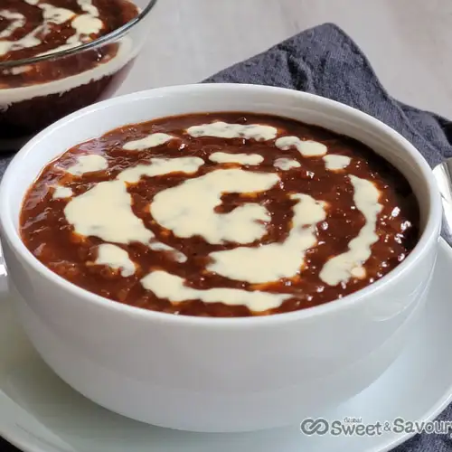

Champorado

Ingredients
- 5 pieces tablea pure chocolate
- 1 3/4 cups glutinous rice or sushi rice
- 3/4 cup granulated white sugar
- 6 to 8 cups water
- Condensed milk to taste
Instructions
- Pour water in a cooking pot. Bring to a boil.
- Put-in the tablea and then stir. Let it dissolve in boiling water.
- Add-in the rice. Let the water re-boil. Set the heat to low-medium and then stir almost constantly to avoid sticking. The rice should be ready when it absorbs the water (about 15 to 25 minutes).
- Add the sugar. Stir until the sugar dissolves.
- Transfer the champorado in individual serving bowls. Top with condensed milk.
- Serve with pandesal. Share and enjoy.